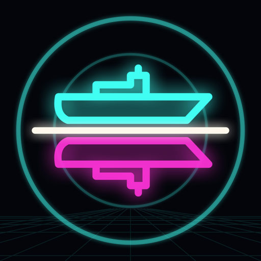
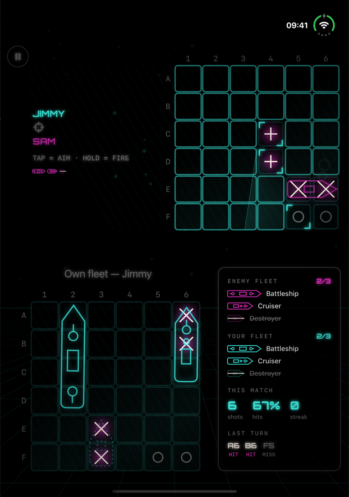
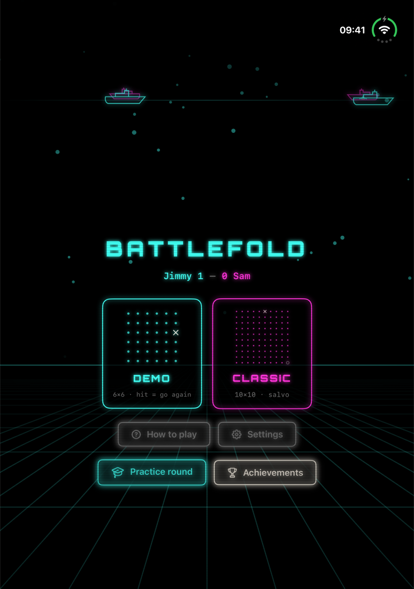

Zeeslag zoals het hoort: tegenover elkaar aan tafel, met één iPhone Duo tussen jullie in. Zet hem neer als een laptop: rechtop je trackinggrid, plat op tafel je eigen vloot. Richt, houd vast, vuur, en voel de torpedo inslaan. Klap dicht, draai het toestel naar je tegenstander, en die klapt het open voor de tegenaanval.
Binnenkort in de App Store

Op het binnenscherm van de iPhone Duo, in laptopstand (Engelse versie).